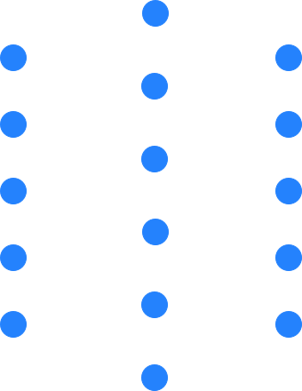
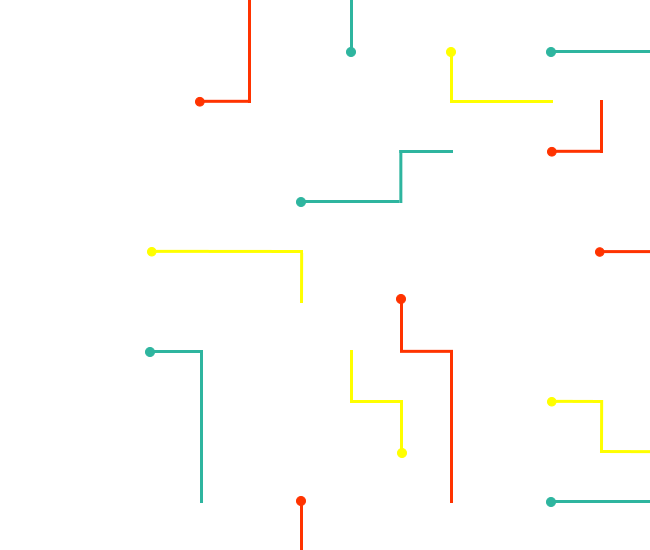
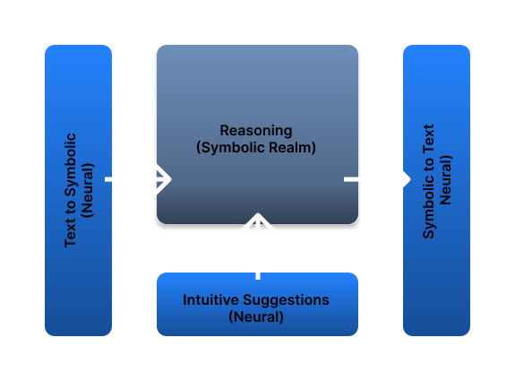

Building Reliable AI by combining
the Fast Intuition of Neural AI with
the Precise Reasoning of Symbolic AI.
The internal operations of the neural networks are hidden within the billions of weights, making it impossible to audit or verify high-stakes decisions.
Outputs are based on probability and not on reasoning. Without a proper model, the system cannot distinguish truth from statistical correlation.
As the depth of a logical problem increases, the accuracy of neural networks drop sharply. They lack the machinery required to maintain the accuracy.

InReason brings together the complementary strengths of neural AI and symbolic AI to overcome their respective limitations. AI problems are divided into intutive tasks and reasoning tasks. Neural modules handle the intuitive tasks while the symbolic modules handle the reasoning tasks.
Intutive tasks include the human perception tasks, translation between natural and symbolic domains, predicting intermediate moves during symbolic reasoning. Symbolic tasks include logical reasoning, verification, problem solving and math.
+91 9740169654
Prestige Lakeside Habitat, Gunjur,
Bengaluru, IN